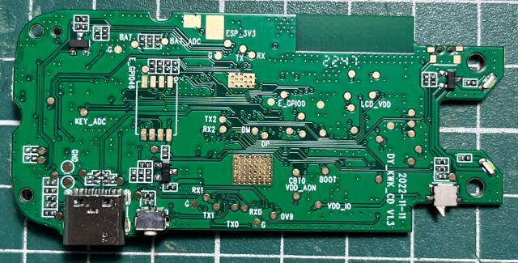
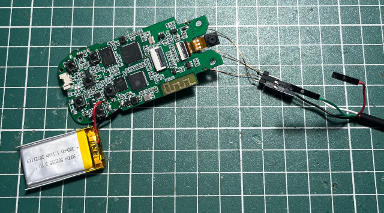

Steward
分享是一種喜悅、更是一種幸福
掌機 - KOOL K48 - 焊接UART
UART腳位

焊接ESP32(TX、RX)

Baudrate 115200bps
ESP-ROM:esp32s3-20210327 Build:Mar 27 2021 rst:0x1 (POWERON),boot:0x4 (SPI_FLASH_BOOT) SPIWP:0xee mode:DIO, clock div:1 load:0x3fce3808,len:0x1654 load:0x403c9700,len:0xbb8 load:0x403cc700,len:0x2f78 entry 0x403c9954 I (24) boot: ESP-IDF v4.4.2-dirty 2nd stage bootloader I (24) boot: compile time 17:56:13 I (24) boot: chip revision: 0 I (26) boot.esp32s3: Boot SPI Speed : 80MHz I (31) boot.esp32s3: SPI Mode : DIO I (36) boot.esp32s3: SPI Flash Size : 8MB I (41) boot: Enabling RNG early entropy source... I (46) boot: Partition Table: I (50) boot: ## Label Usage Type ST Offset Length I (57) boot: 0 nvs WiFi data 01 02 00009000 00004000 I (64) boot: 1 otadata OTA data 01 00 0000d000 00002000 I (72) boot: 2 phy_init RF data 01 01 0000f000 00001000 I (79) boot: 3 ota_0 OTA app 00 10 00010000 001b0000 I (87) boot: 4 ota_1 OTA app 00 11 001c0000 001b0000 I (94) boot: 5 ziku unknown 40 83 00370000 000be000 I (102) boot: 6 ci_en unknown 40 84 0042e000 00270000 I (109) boot: 7 ci_cn unknown 40 85 0069e000 00130000 I (117) boot: 8 storage Unknown data 01 82 007ce000 00032000 I (124) boot: End of partition table I (129) esp_image: segment 0: paddr=00010020 vaddr=3c110020 size=76a40h (485952) map I (224) esp_image: segment 1: paddr=00086a68 vaddr=3fc99310 size=04a64h ( 19044) load I (228) esp_image: segment 2: paddr=0008b4d4 vaddr=40374000 size=04b44h ( 19268) load I (234) esp_image: segment 3: paddr=00090020 vaddr=42000020 size=10135ch (1053532) map I (428) esp_image: segment 4: paddr=00191384 vaddr=40378b44 size=107cch ( 67532) load I (443) esp_image: segment 5: paddr=001a1b58 vaddr=50000000 size=00010h ( 16) load I (451) boot: Loaded app from partition at offset 0x10000 I (452) boot: Disabling RNG early entropy source... I (463) cpu_start: Pro cpu up. I (463) cpu_start: Starting app cpu, entry point is 0x40375478 I (0) cpu_start: App cpu up. I (477) cpu_start: Pro cpu start user code I (477) cpu_start: cpu freq: 160000000 I (477) cpu_start: Application information: I (480) cpu_start: Project name: scanpen I (485) cpu_start: App version: v2.4-96-g21c7989-dirty I (491) cpu_start: Compile time: Nov 4 2022 17:56:09 I (497) cpu_start: ELF file SHA256: 22273280683b1f97... I (503) cpu_start: ESP-IDF: v4.4.2-dirty I (509) heap_init: Initializing. RAM available for dynamic allocation: I (516) heap_init: At 3FCA8020 len 00037FE0 (223 KiB): D/IRAM I (522) heap_init: At 3FCE0000 len 0000EE34 (59 KiB): STACK/DRAM I (529) heap_init: At 3FCF0000 len 00008000 (32 KiB): DRAM I (535) heap_init: At 600FE000 len 00002000 (8 KiB): RTCRAM I (542) spi_flash: detected chip: generic I (546) spi_flash: flash io: dio I (551) sleep: Configure to isolate all GPIO pins in sleep state I (557) sleep: Enable automatic switching of GPIO sleep configuration I (564) coexist: coexist rom version e7ae62f I (569) cpu_start: Starting scheduler on PRO CPU. I (0) cpu_start: Starting scheduler on APP CPU. I (590) gpio: GPIO[38]| InputEn: 0| OutputEn: 1| OpenDrain: 0| Pullup: 0| Pulldown: 0| Intr:0 I (590) gpio: GPIO[48]| InputEn: 0| OutputEn: 1| OpenDrain: 0| Pullup: 0| Pulldown: 0| Intr:0 I (600) gpio: GPIO[15]| InputEn: 0| OutputEn: 1| OpenDrain: 0| Pullup: 0| Pulldown: 0| Intr:0 I (610) scanpen_init: uart init I (620) gpio: GPIO[21]| InputEn: 0| OutputEn: 1| OpenDrain: 0| Pullup: 0| Pulldown: 0| Intr:0 I (630) gpio: GPIO[47]| InputEn: 0| OutputEn: 1| OpenDrain: 0| Pullup: 0| Pulldown: 0| Intr:0 I (640) scanpen_init: Initialize 4line spi bus I (640) gpio: GPIO[9]| InputEn: 0| OutputEn: 1| OpenDrain: 0| Pullup: 0| Pulldown: 0| Intr:0 I (650) scanpen_init: Install LCD driver of st7735s I (660) gpio: GPIO[42]| InputEn: 0| OutputEn: 1| OpenDrain: 0| Pullup: 0| Pulldown: 0| Intr:0 en init ok cn init ok version dict.v1000.3.0.3 I (800) gpio: GPIO[16]| InputEn: 0| OutputEn: 1| OpenDrain: 0| Pullup: 0| Pulldown: 0| Intr:0 I (800) scanpen_init: Initializing SPIFFS I (820) scanpen_init: Partition size: total: 180971, used: 1004 danci cnt = 0 shengci cnt = 0 sys vol 8 sys bl = 3 cn ver = 1.2 en ver 1.1 speed = 2 W (840) BT_INIT: esp_bt_controller_mem_release not implemented, return OK I (840) BT_INIT: BT controller compile version [05195c9] I (840) phy_init: phy_version 503,13653eb,Jun 1 2022,17:47:08 I (890) system_api: Base MAC address is not set I (890) system_api: read default base MAC address from EFUSE I (890) BT_INIT: Bluetooth MAC: 68:b6:b3:57:6f:fe I (930) scanpen_bt: create attribute table successfully, the number handle = 8 I (930) scanpen_bt: SERVICE_START_EVT, status 0, service_handle 40 I (940) scanpen_bt: advertising start successfully I (46850) scanpen_periph: adc key:2 I (47080) scanpen_periph: adc key:2 I (49710) scanpen_periph: adc key:3 I (49970) scanpen_periph: adc key:3 I (50920) scanpen_periph: adc key:4 I (52410) scanpen_periph: adc key:5 I (53010) scanpen_periph: adc key:2 I (53710) scanpen_periph: gpio key:6 I (54320) scanpen_periph: adc key:1 I (54850) scanpen_periph: gpio key:6 I (55770) scanpen_periph: adc key:1 I (56310) scanpen_periph: gpio key:6